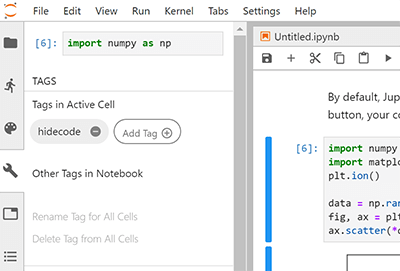

How-to and FAQ¶
This page contains more advanced and complete information about the
jupyter-book repository. See the sections below.
Enable Google Analytics¶
If you have a Google account, you can use Google Analytics to collect some information on the traffic to your Jupyter Book. With this tool, you can find out how many people are using your book, where they come from and how they access it, whether they are using the desktop or the mobile version etc.
To add Google Analytics to your Jupyter Book, navigate to Google Analytics, create a new Google Analytics account and add the url of your Jupyter Book to a new property. Once you have set everything up, your Google Analytics property will have a so-called Tracking-ID, that typically starts with the letters UA. All that you need to do is to copy this ID and paste it into your configuration file:
html:
google_analytics_id: UA-XXXXXXXXX-X
Check external links in your book¶
If you’d like to make sure that the links outside of your book are valid, run the Sphinx link checker with Jupyter Book. This will check each of your external links and ensure that they resolve.
To run the link checker, use the following command:
jupyter-book build mybookname/ --builder linkcheck
It will print the status of each link in your book so that you may resolve any incorrect links later on.
Clean your book’s generated files¶
It is possible to “clean up” the files that you generate when you build your book. This is often useful if you have recently changed a lot of content in order to ensure that you build your book from a clean slate.
You can clean up your book’s generated content by running the following command:
jupyter-book clean mybookname/
By default, this will delete all folders inside mybookname/_build except
for a folder called .jupyter_cache. This ensures that the content of your book
will be regenerated, while the cache that is generated by running your book’s code
will not be deleted (because regenerating it may take some time).
To delete the .jupyter_cache folder as well, add the --all flag like so:
jupyter-book clean mybookname/ --all
This will entirely remove the folders in the _build/ directory.
How should I add cell tags and metadata to my notebooks?¶
You can control the behaviour of Jupyter Book by putting custom tags in the metadata of your cells. This allows you to do things like automatically hide code cells) as well as add interactive widgets to cells.
Adding tags using notebook interfaces¶
There are two straightforward ways to add metadata to cells:
Use the Jupyter Notebook cell tag editor. The Jupyter Notebook ships with a cell tag editor by default. This lets you add cell tags to each cell quickly.
To enable the cell tag editor, click
View -> Cell Toolbar -> Tags. This will enable the tags UI. Here’s what the menu looks like.
Use the JupyterLab Cell Tags plugin. JupyterLab is an IDE-like Jupyter environment that runs in your browser. It has a “cell tags” plugin built-in, which exposes a user interface that lets you quickly insert cell tags.
You’ll find tags under the “wrench” menu section. Here’s what the tags UI in JupyterLab looks like.

Tags are actually just a special section of cell level metadata. There are three levels of metadata:
For notebook level: in the Jupyter Notebook Toolbar go to
Edit -> Edit Notebook MetadataFor cell level: in the Jupyter Notebook Toolbar go to
View -> Cell Toolbar -> Edit Metadataand a button will appear above each cell.For output level: using e.g.
IPython.display.display(obj,metadata={"tags": []), you can set metadata specific to a certain output (but Jupyter Book does not utilize this just yet).

Add tags using MyST Markdown notebooks¶
If you’re writing notebooks with MyST Markdown, then you can add tags to each code cell when you write the {code-cell} block. For example, below we:
```{code-cell}
:tags: [tag1,tag2,tag3]
print("some code")
```
Will create a code cell with those three tags attached to it. For more information about MyST Markdown notebooks, see Notebooks written entirely in Markdown.
Add tags using Python code¶
Sometimes you’d like to quickly scan through a notebook’s cells in order to
add tags based on the content of the cell. For example, you might want to
hide any cell with an import statement in it using the remove-input tag.
Here’s a short Python snippet to accomplish something close to this. First change directories into the root of your book folder, and then run the script below as a Python script or within a Jupyter Notebook (modifying as necessary for your use case). Finally, check the changes that will be made and commit them to your repository.
import nbformat as nbf
from glob import glob
# Collect a list of all notebooks in the content folder
notebooks = glob("./content/**/*.ipynb", recursive=True)
# Text to look for in adding tags
text_search_dict = {
"# HIDDEN": "remove-cell", # Remove the whole cell
"# NO CODE": "remove-input", # Remove only the input
"# HIDE CODE": "hide-input" # Hide the input w/ a button to show
}
# Search through each notebook and look for the text, add a tag if necessary
for ipath in notebooks:
ntbk = nbf.read(ipath, nbf.NO_CONVERT)
for cell in ntbk.cells:
cell_tags = cell.get('metadata', {}).get('tags', [])
for key, val in text_search_dict.items():
if key in cell['source']:
if val not in cell_tags:
cell_tags.append(val)
if len(cell_tags) > 0:
cell['metadata']['tags'] = cell_tags
nbf.write(ntbk, ipath)
Use raw HTML in Markdown¶
Jupyter Notebook Markdown allows you to use raw HTML in Markdown cells. This is discouraged in most cases, because it will usually just be passed through the build process as raw text, and so will not be subject to processes like:
relative path corrections
copying of assets to the build folder
multiple output type formatting (e.g. it will not show in PDFs!).
So, for instance, below we add:
<a href="../intro.md">Go Home HTML!</a>
[Go Home Markdown!](../intro.md)
and you will find that the HTML link is broken:
:::{tip} Note that MyST Markdown now has some extended syntax features, which can allow you to use certain HTML elements in the correct manner.
For example, the raw HTML image tag
<img src="../images/fun-fish.png" alt="the fun fish!" width="200px"/>
becomes

See the image section for details. :::
Adding extra HTML to your book¶
There are a few places in Jupyter Book where you can add extra arbitrary HTML.
In all cases, this is done with a configuration value in your _config.yml file.
Configuring to Improve Accessibility¶
Declaring the primary language used in your book assists screen reader and browser translation tools.
Language can be configured by providing the appropriate language code to the language option, under sphinx configuration in your _config.yml file:
sphinx:
language: en
This example will set the book language to English, which would be represented in your book’s HTML as <html lang="en">...</html>.
Working on Windows¶
Jupyter Book is now also tested against a Windows environment on Python 3.7 üòÄ
For its specification, see the windows-latest runner used by GitHub CI.
However, there is a known incompatibility for notebook execution, when using Python 3.8 (see issue #906).
If you’re running a recent version of Windows 10 and encounter any issues, you may also wish to try installing Windows Subsystem for Linux.
As of June 5, 2020, there were three open issues that required Windows-specific changes. We hope these are now fixed in version 0.8 of Jupyter Book but, in case any issues still arise, we leave these community tips, which are known to work for some users. Note that there is no guarantee that they will work on all Windows installations.
Character encoding
Jupyter Book currently reads and writes files on Windows in the native Windows encoding, which causes encoding errors for some characters in UTF8 encoded notebooks.
Work-around: Beginning with Python 3.7 cmd.exe or powershell enviroments that set PYTHONUTF8=1 override the native locale encoding and use UTF8 for all input/output.
:::{tip} To make it easier to use this option, the EOAS/UBC notebook courseware project has created a Conda package runjb which does this automatically for powershell :::
A new Windows event loop
The asyncio event loop has been changed for Python 3.8 causing sphinx-build to fail.
Work-around: Pin to Python 3.7.6. This environment_win.yml file does that, and also installs runjb to fix issue 1.
Nested tables of contents
Currently,
_toc.ymlfiles that reference Markdown files in sub-folders are failing for some Windows users. That is, this original _toc.yml file will fail with a message saying Jupyter Book “cannot find index.md”Work-around: Flatten the layout of the book to a single level, i.e. this _toc.yml file works with Windows.
Summary
The following workflow should succeed using a miniconda powershell terminal on Windows 10:
conda install gitgit clone https://github.com/eoas-ubc/quantecon-mini-example.gitcd quantecon-mini-examplegit checkout windowsconda env create -f environment_win.ymlconda activate wintestcd mini_bookrunjb docs
After the build, view the HTML with:
start docs\_build\html\index.html
Manually specify extra files/folders to be included in a website¶
Jupyter Book will copy over any files that are linked from within its pages so that the links work in the built website. However, sometimes you’d like to manually ensure that files and folders are included in your built website. For example, if you’d like to link to them from outside your built documentation, but not from within your built documentation.
To manually specify items to copy over, use the html_extra_path Sphinx configuration.
You can configure this with Jupyter Book like so:
sphinx:
config:
html_extra_path: ['folder1', 'folder2']
When you build your book’s HTML, Jupyter Book will ensure that all files and folders inside the folders specified in html_extra_path will be copied over to your built website.
For example, if you have a folder structure in your book like so:
assets
└── data
└── mydataset.csv
and the following Jupyter Book configuration:
sphinx:
config:
html_extra_path: ['assets']
Then the dataset will be accessible at yourwebsite.com/data/mydataset.csv.
Enabling a custom builder using jupyter-book¶
You can initiate builds for a custom builder using:
jb build <project> --builder=custom --custom-builder=<builder-name>
Advanced sphinx users may find an extension that builds a different type of output from
the Sphinx AST such as sphinx-tojupyter
which is an extension for building notebooks that only includes basic markdown.
Warning
sphinx-tojupyter will be deprecated once
myst syntax rendering support is available in jupyter notebooks.
You can enable the jupyter builder by adding it to the _config.yml
sphinx:
extra_extensions: [sphinx_tojupyter]
and using the custom option via jupyter-book:
jb build <project> --builder=custom --custom-builder=jupyter
Warning
Developers: When using other output targets, the package will need to support specifying the
mime type priority for myst_nb compatibility.
See this code for further details
What if I have an issue or question?¶
If you’ve got questions, concerns, or suggestions, please open an issue at at the Jupyter Book issues page